Product Design · Fintech · Open Banking
Condueet lets businesses securely access financial data from banks across the continent through a single integration. I designed the experiences that make complex, regulated infrastructure feel effortless, for business users and developers alike, using a user-centered process from discovery through iteration.
Role
Product Designer
Focus
Onboarding · Data · Dev tools · Website
Timeline
2024–25
Platform
Web · Mobile · Developer API
Domain
Open Banking · Africa
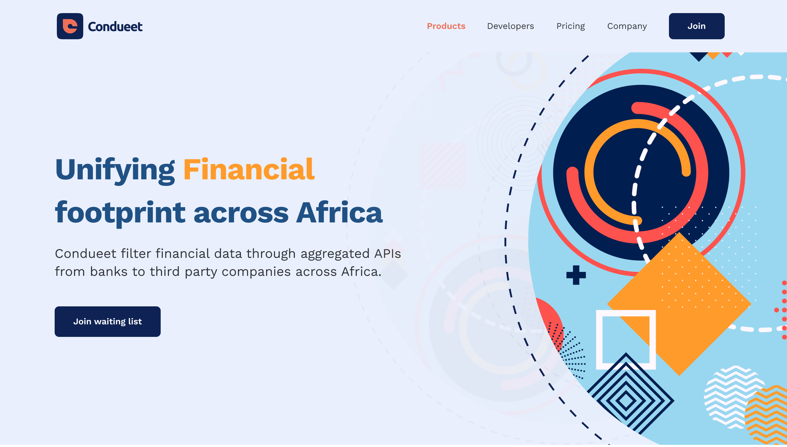
The snapshot
Building a fintech product in Africa meant wiring up dozens of banks, each with its own API, onboarding, and data shape. Condueet collapses that into a single, secure connection, and my job was to make that power approachable.
01 · Challenge
Fragmented bank rails
Every institution had different APIs, verification, and data structures. Integration was slow, brittle, and hard to trust.
02 · My role
End-to-end product design
Owned onboarding, account connections, analytics, developer tooling, and API workflows, research through UI.
03 · Outcome
Accessible infrastructure
A unified, security-first platform that business users and developers can adopt with confidence.
1×
Integration to reach every connected bank
−58%
Time to first successful connection
3min
Median developer time-to-first-call
+44%
Onboarding completion rate
Independent case study presenting real product work. Metrics are illustrative placeholders, swap in verified results.
Context
Condueet aggregates APIs from banks and financial institutions and exposes them to third-party companies through one secure layer.
For a fintech founder, that means shipping lending, payments, or budgeting products without negotiating and maintaining a separate integration for every bank. The hard part isn't only engineering, it's trust. Moving someone's financial data demands an experience that's transparent, secure, and legible at every step. That's the design problem I focused on.
The approach
Five phases, run pragmatically, so every screen traces back to a real user need and a measurable goal. The sections below walk through each phase and the work it produced.
01 · Discover
Strategy · Competitive analysis · Understand the user · Personas · Affinity mapping · Use case + HMW
02 · Specify
User journey · User flow · Card sorting · Information architecture
03 · Design
Sketches · Wireframes · Design system · User interface
04 · Evaluate
Prototype · QA testing · Conclusion
05 · Iterate
Tweaks that fix real usability issues
Phase 01
Understand the two audiences and the trust problem before proposing anything. I worked across both sides of the platform, the businesses consuming data and the developers wiring it up.
Strategy
The strategic bet wasn't "build a dashboard", it was to make regulated open-banking infrastructure adoptable by two very different audiences at once. I framed success around three pillars that every later decision had to serve.
Earn trust
Make sharing bank data feel safe enough for an end user to say yes.
Turn data into decisions
Give businesses answers, not transaction firehoses.
Developer velocity
Get a developer to a first successful call in minutes, not days.
Competitive analysis
I benchmarked global infrastructure and regional open-banking players against the realities of local bank rails, to find the gap Condueet could own.
Global infrastructure
Plaid · TrueLayer
Best-in-class developer experience and polished consent, but built for US/UK rails with limited African coverage.
Regional players
Mono · Okra · Stitch
Real coverage of local banks and growing APIs, but trust and consent UX vary and developer onboarding is uneven.
Condueet's opening
Trust + velocity, localised
Pair security-first, plain-language consent with a genuinely fast developer experience, tuned to African bank rails.
Understand the user
Interviews with founders, ops teams and developers, plus a review of support tickets and where users dropped off, mapped the friction to three groups.
End users
Wary of connecting
People hesitated to link a bank account to an app they didn't yet trust with their financial data.
Businesses
Drowning in raw data
Even once connected, teams got firehoses of transactions with no clear way to turn them into insight.
Developers
Slow to integrate
Unclear docs, keys, and sandboxes meant days of setup before a first successful API call.
User persona
Amara Okafor
Ops Lead · Lending fintech
Runs operations at an early lending product. Needs a live picture of customers' cash-flow to make credit decisions, without a data team.
Goals
Frustrations
“I don't need more data. I need decisions I can trust.”
Daniel Mensah
Backend Developer · Payments startup
Evaluating open-banking providers. Success is a working call in an afternoon, not a two-week integration.
Goals
Frustrations
“If I can't get a call working today, we'll try someone else.”
Affinity mapping
I grouped interview notes and support findings into four themes, the patterns that shaped every design decision downstream.
Trust & consent
Users won't link a bank they don't trust; the connection moment is where they drop.
Data → decisions
Businesses want answers, cash-flow, spend, KPIs, not transaction firehoses.
Developer velocity
Time-to-first-call decides whether a team commits to the platform.
Coverage & reliability
One integration must reliably reach every connected bank.
Use case & How Might We
Primary use cases
How Might We
Phase 02
Turn insight into structure, the journeys, flows and information architecture the product hangs on.
User journey
Mapping the business user's path surfaced the emotional low point, the moment of connecting a bank and granting consent, and told me exactly where to invest.
01 · Discover
Curious
Finds Condueet, wonders if it's safe and worth it.
02 · Sign up
Willing
Quick account creation; low commitment so far.
03 · Connect bank
Hesitant ▾
The riskiest moment, "is my data safe?" Drop-off peaks.
04 · Grant consent
Reassured
Sees exactly what's shared and stays in control.
05 · First value
Confident
Insight appears; the effort pays off, trust compounds.
User flow
I detailed the decision points and states for each core flow, the branching of bank selection, verification, consent scopes, and the developer's key-to-first-call path, before any pixels.
Start
Sign up
Step
Choose bank
Step
Login method
Step
Bank login
Decision
Consent
Approve · Deny
Success
Connected
Value
Insights
The connect & consent flow. The highlighted step is the make-or-break moment, so it earned the most design attention.
Card sorting
Open-ended card sorts with users collapsed a sprawl of features and settings into three mental-model groups, the spine of the navigation.
Connect & consent
Everything about linking a bank and controlling access.
Understand
Insights, balances, spending and trends for businesses.
Build
Keys, environments, docs and logs for developers.
Information architecture
Business app
Developer console
Consent layer
Phase 03
From rough thinking to a shared, high-fidelity system, sketches and wireframes, a token-based design system, and the final user interface.
Sketches
Low-fidelity sketches let me explore the connect, consent and console flows quickly, stress-testing consent language until non-technical users could explain it back.
Early idea · bank connection
Early idea · consent screen
Early idea · insights dashboard
Wireframes
Mid-fidelity wireframes locked hierarchy and flow, KPIs above raw tables, security cues at the connection step, keys and status first in the console, before any visual design.
Connect · searchable bank directory
Consent · per-scope permissions
Dashboard · KPIs above the table
Design system
A shared token set and component library spanning the business app and the developer console, so a regulated product still feels cohesive and calm.
Type
A characterful grotesque for headlines, a neutral sans for UI, and mono for everything code & data.
Color
A black canvas with a trustworthy accent, plus a safe data-viz palette for clarity.
Components
Consent toggles, KPI cards, key rows, charts, built for trust and accessibility.
User interface
Each surface below is shown with the design decision behind it, and the research insight that drove that decision.
A guided, security-first flow to verify identity and link a bank in a few taps. Recognisable bank branding, plain-language steps, and visible encryption cues turn the riskiest moment into a confident one.
Design decision · from insight 01
Drop-off peaked at bank connection, so I led with recognisable bank logos, a search-first directory, and minimal fields, moving verification later so trust is earned before effort is asked.
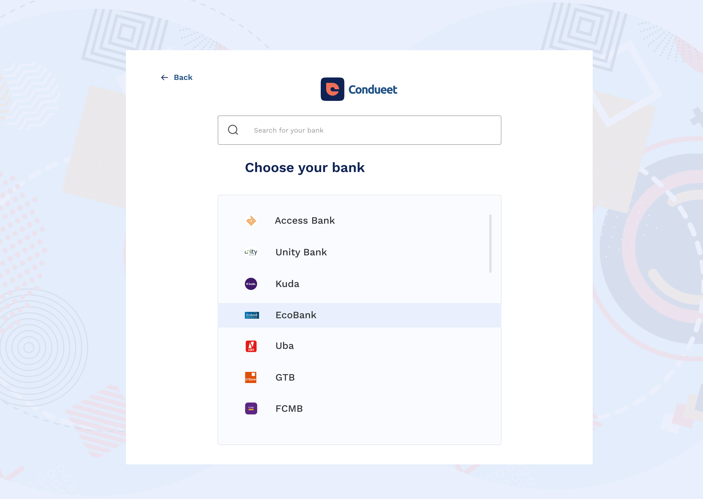
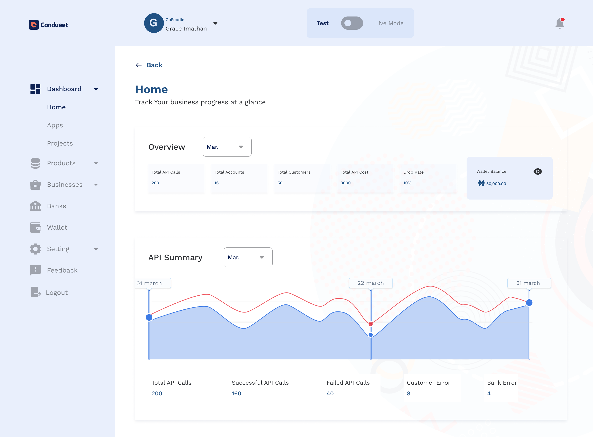
Aggregated data from every connected account, turned into decisions: cash-flow at a glance, spending by category, and performance trends, so teams act on insight instead of parsing rows.
Design decision · from insight 02
Businesses asked for answers, not rows, so the home screen leads with KPIs and an API summary chart, and raw transaction tables sit one level deeper, behind the decision they support.
Everything a developer needs to reach a first successful call fast: scoped keys, test and live environments, copy-paste snippets, and a live response panel, so integration takes minutes, not days.
Design decision · from insight 03
Time-to-first-call was the real sales pitch, so keys, test/live toggle, and app status live on one screen. A developer never hunts for the thing that proves the product works.
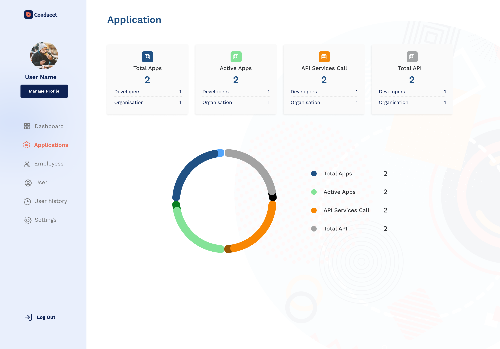
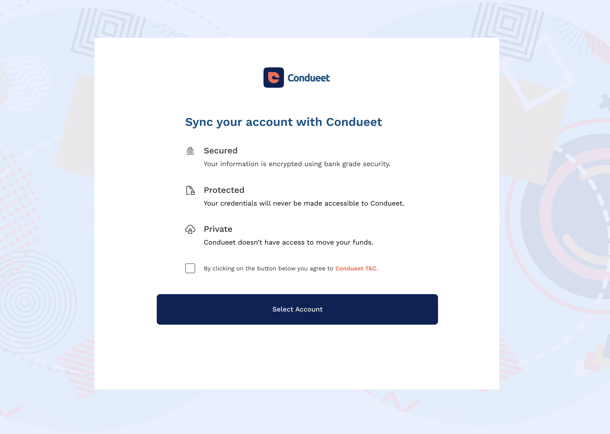
A transparent permission layer that shows exactly what a business can access, lets users grant or deny each scope, and makes revoking access a single tap, security-first UX that makes trust the default.
Design decision · from insight 01
Consent is the conversion moment, so the screen makes three promises in plain language (Secured, Protected, Private) before asking for anything, and agreement is an explicit, unhurried choice.
The product's front door: a conversion-focused site that explains a complex, regulated platform in plain language, leads with trust and coverage, and routes the two audiences, businesses and developers, to the right next step.
Design decision
Two audiences, one front door, the site splits businesses and developers within the first scroll, so each reaches proof (coverage and security, or docs and keys) without wading through the other's story.
More from the shipped product
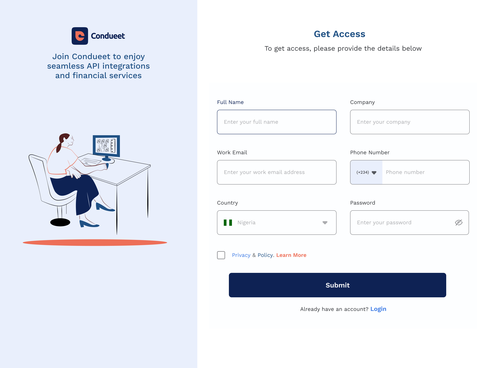
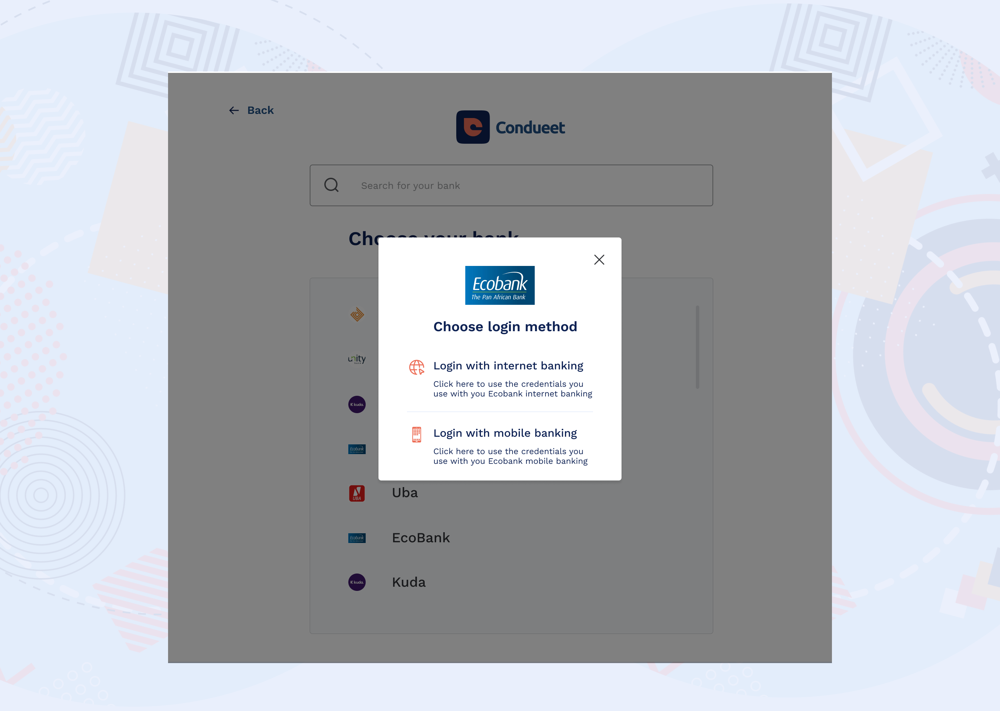
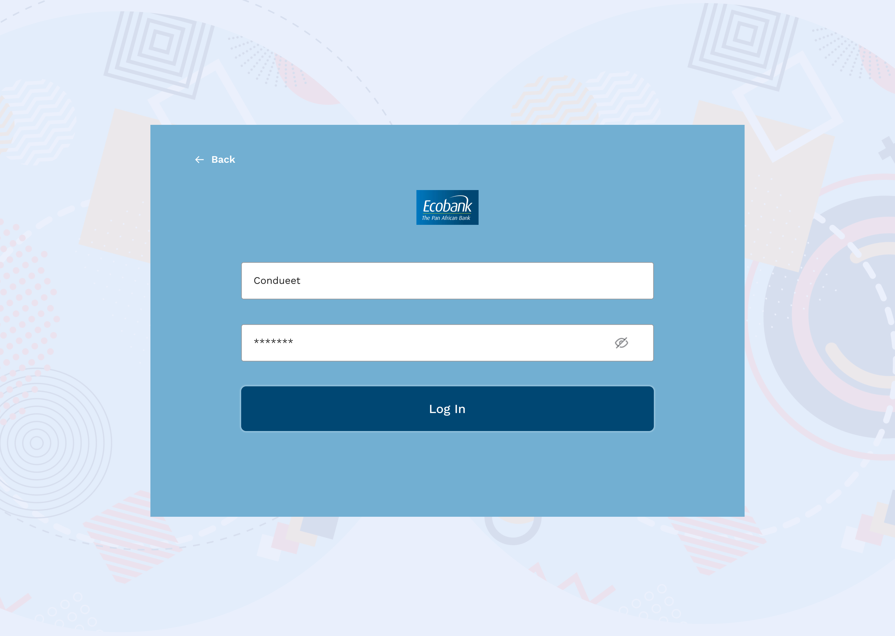
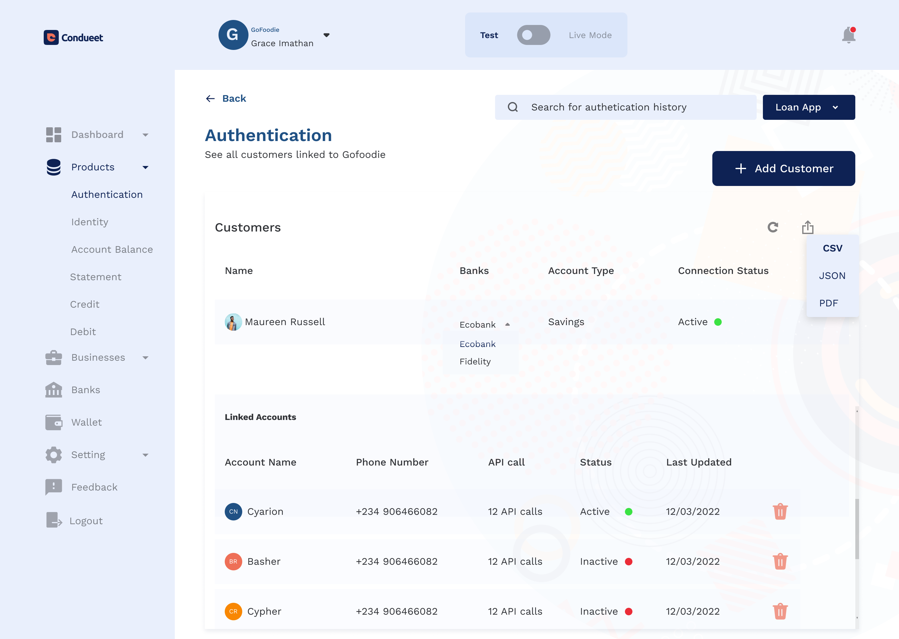
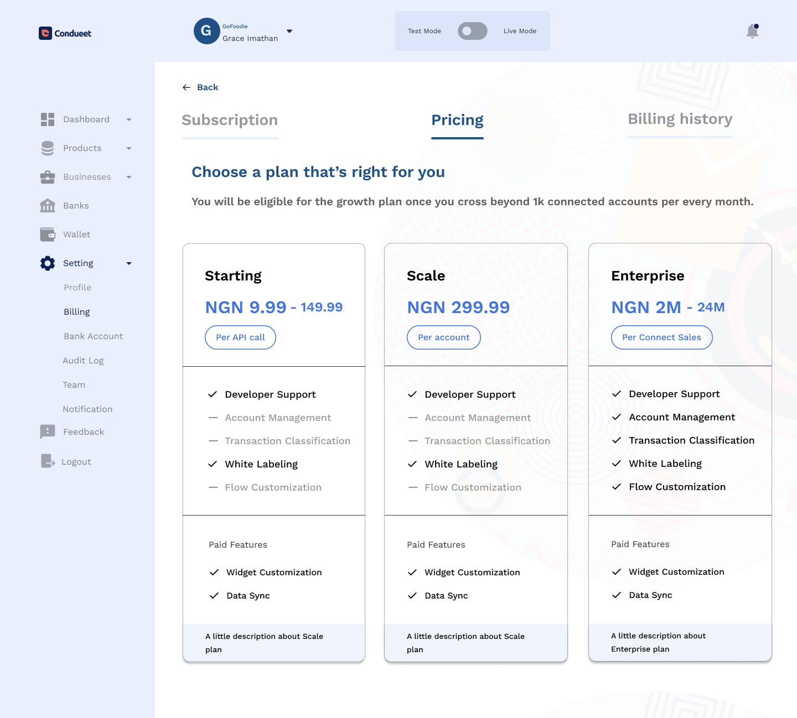
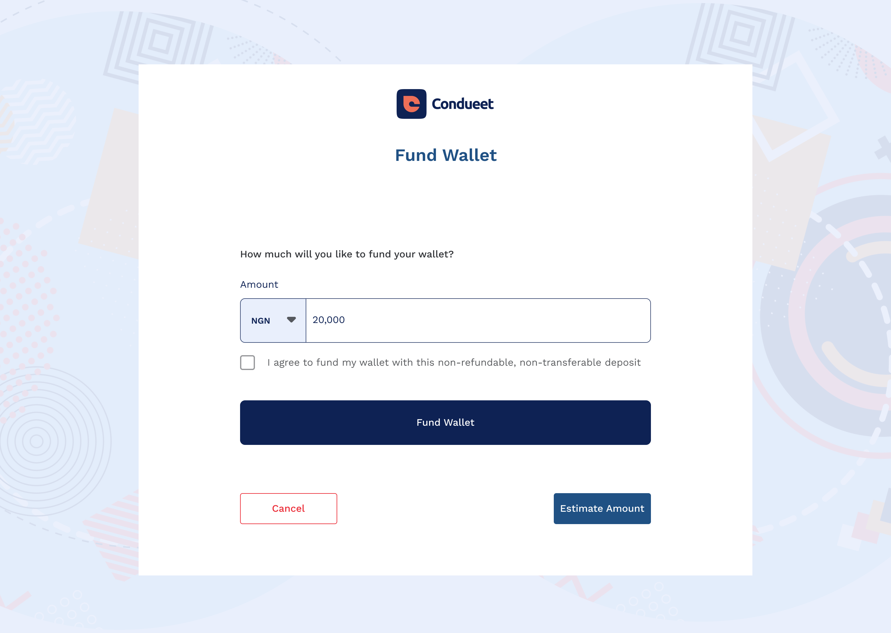
Phase 04
Put the flows in front of users and pressure-test them against the goals set in discovery.
Prototype
I built interactive prototypes of the connect, consent, dashboard and developer flows, close enough to the real thing to test the riskiest moments with people.
QA testing
Moderated usability sessions and QA passes focused on the two make-or-break questions, plus functional checks against real API constraints.
Consent comprehension
Could users explain, in their own words, what data they were sharing? Consent copy went through three rounds until non-technical users could.
Time-to-first-call
How fast could a developer reach a successful call? The console was re-ordered so keys, environment and status sit first.
Conclusion
Testing validated the core structure, KPIs over rows, security-first consent, keys-first console, and pinpointed the specific frictions to resolve in the next pass: verification timing, consent wording, and console ordering.
Phase 05
Close the loop, make tweaks that fix real usability issues rather than adding surface. Each pass targeted one finding from evaluation.
Fix 01
Verification, moved later
Trust is earned before effort is asked, so I front-loaded recognisable banks and search, and pushed verification back in the flow.
Fix 02
Consent, in plain language
Three promises, Secured, Protected, Private, replaced legalese, so agreement is an explicit, understood choice.
Fix 03
Console, proof-first
Keys, environment toggle and status moved to the top, so the thing that proves the product works is never buried.
Impact
Measured across business users and developers after rollout. Figures are illustrative placeholders, replace with verified results.
Connection
+44%
Onboarding completion
Speed
−58%
Time to first connection
Developers
3 min
Median time-to-first-call
Trust
100%
Consent approval rate
Reflection
Trust is a design system.
Security cues, plain language, and visible control aren't decoration, they're the product. Designing them as reusable patterns paid off on every screen.
DX is product design.
Treating the developer journey with the same rigor as the consumer flow turned integration speed into a growth lever.
Next: localisation & scale.
I'd extend the system across more markets, currencies, and languages, and explore richer financial-health insights for businesses.
What this project taught me
Condueet taught me that adoption of complex infrastructure isn't won with more capability, it's won by making every step legible. Plain-language consent, a three-minute first API call, visible security: each one turned hesitation into momentum. The best design decision was rarely adding something; it was making what already existed impossible to misunderstand.
Next project
Aria · AI Student Assistant
→